05/03/2019
STORY HOUSE SELECT · LOVE & FASCISM IN THE 21ST CENTURY: Interview on the debut film by Carmen-Sibha Keiso
STORY HOUSE SELECT
INFO
LOVE & FASCISM IN THE 21ST CENTURY: Interview on the debut film by Carmen
Sibha Keiso
CarmenSibha Keiso’s debut featurelength film ‘Love & Fascism in the 21st Century’ is a metanonnarrativedocudrama
videoessay, based on a text written by the artist. The script is performed by a range of drama, art, music, and dance
students who attempt to enact Keiso’s reflections on their shared contemporary condition.
Presenting a selfreflexive internal dialogue which questions themes surrounding aesthetic representation, technique, and
cultural diaspora. A French and American voiceover narrate the confessional monologue over a backdrop of vignettes,
episodes and melodramatic soundbites. In search of the archival, Keiso attempts to reimagine the possibilities for film and
storytelling in an environment overwhelmed by the self.
1/12
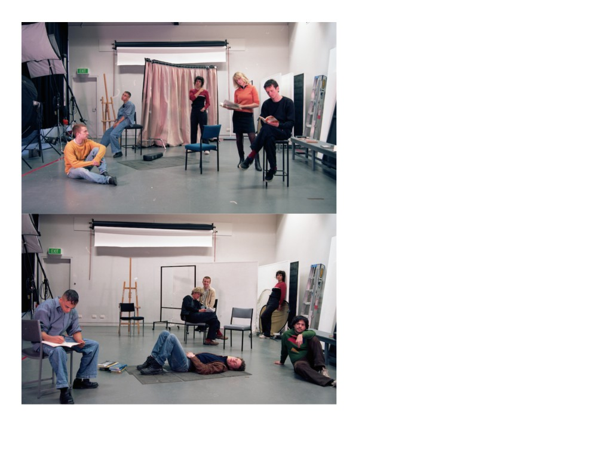
05/03/2019
STORY HOUSE SELECT · LOVE & FASCISM IN THE 21ST CENTURY: Interview on the debut film by Carmen-Sibha Keiso
Melbourne based artist Lisa Radford casually interviews Keiso about the film.
2/12
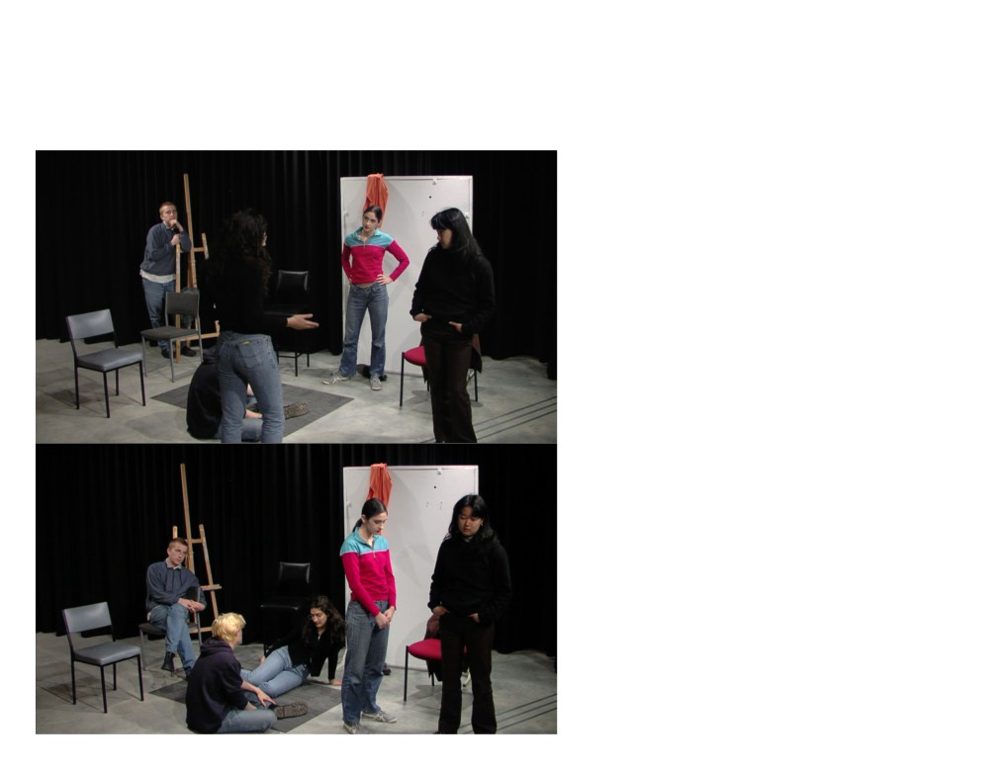
05/03/2019
STORY HOUSE SELECT · LOVE & FASCISM IN THE 21ST CENTURY: Interview on the debut film by Carmen-Sibha Keiso
LR: So what’s the title? And who’s in it
CK: Love & Fascism in the 21st Century… Like a collection of students, drama students, art students, music, dance. I
guess everyone is just acting as students, and who better to play the role than the real deal? Transcript into script.
3/12
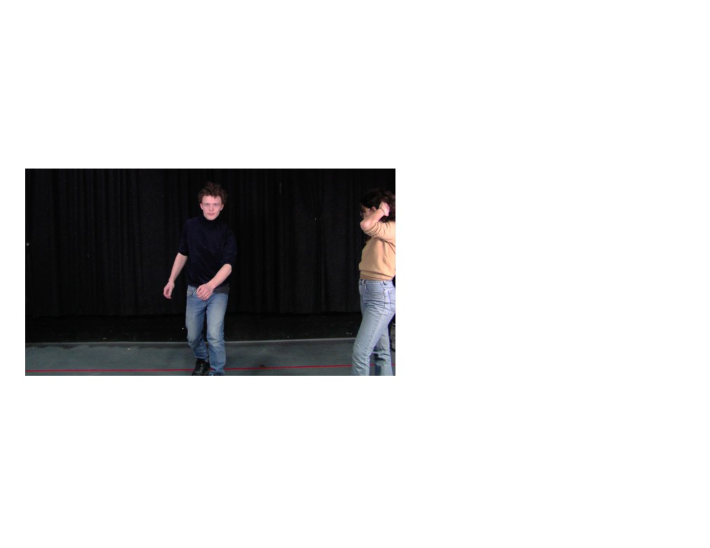
05/03/2019
STORY HOUSE SELECT · LOVE & FASCISM IN THE 21ST CENTURY: Interview on the debut film by Carmen-Sibha Keiso
LR: How did you write the script?
CK: It started as reflexive notes and that drifted into research notes, but eventually it mutated into a story. So it’s probably
just fictocriticism, but I’m calling it an essay. The film is based on the essay.
LR: What did you want it to feel like?
CK: I don’t know, I just want it to be well received See, I’m treating it like an artwork now
4/12
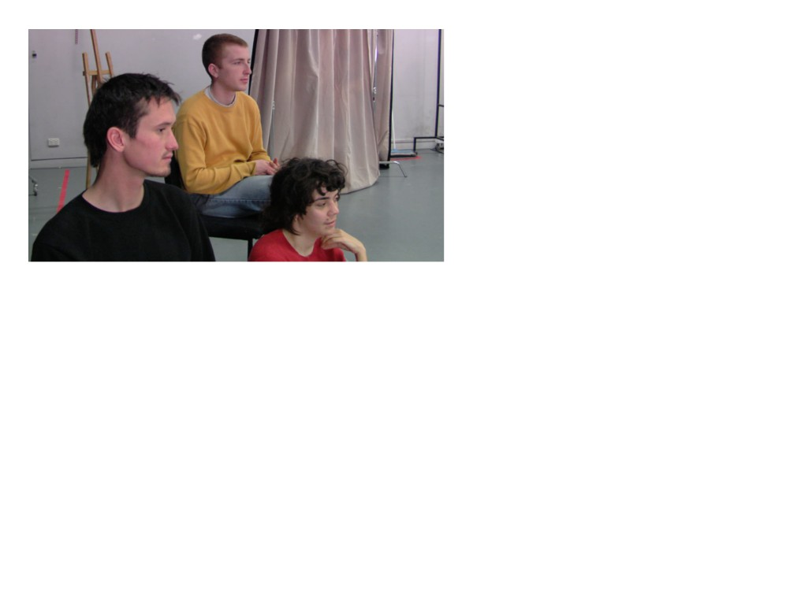
05/03/2019
STORY HOUSE SELECT · LOVE & FASCISM IN THE 21ST CENTURY: Interview on the debut film by Carmen-Sibha Keiso
LR: But it is an artwork.
CK: Yeah, I know… Lets just do a fake interview.
LR: Why is it nonlinear in narrative? Why is it being done now?
CK: So I’m trying to reimagine film using contrary theatrical approaches, ones that contradict each other in essence… but
from a densely naive place, in that I didn’t really know much about film or theatre technic in the beginning. I was really
looking for something.
And the writing is archival, it follows a self referential method. I’m digging things up in order to find something else within
me. It’s mostly therapeutic.
5/12
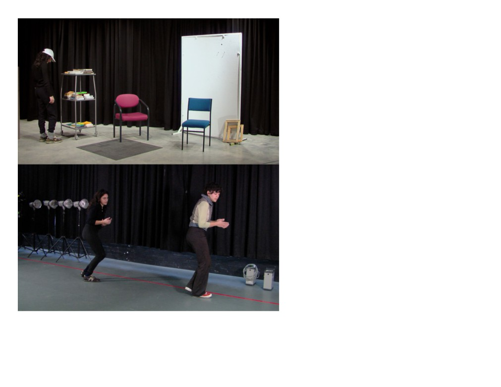
05/03/2019
STORY HOUSE SELECT · LOVE & FASCISM IN THE 21ST CENTURY: Interview on the debut film by Carmen-Sibha Keiso
LR: Why is it all grey?
CK: Institutional framework. All my work is. I just look at my surroundings and mimic that. For the whole time I have been
making work I have been in the institution. So I go with whatever is handy and then exaggerate that aesthetic mode. Well
6/12
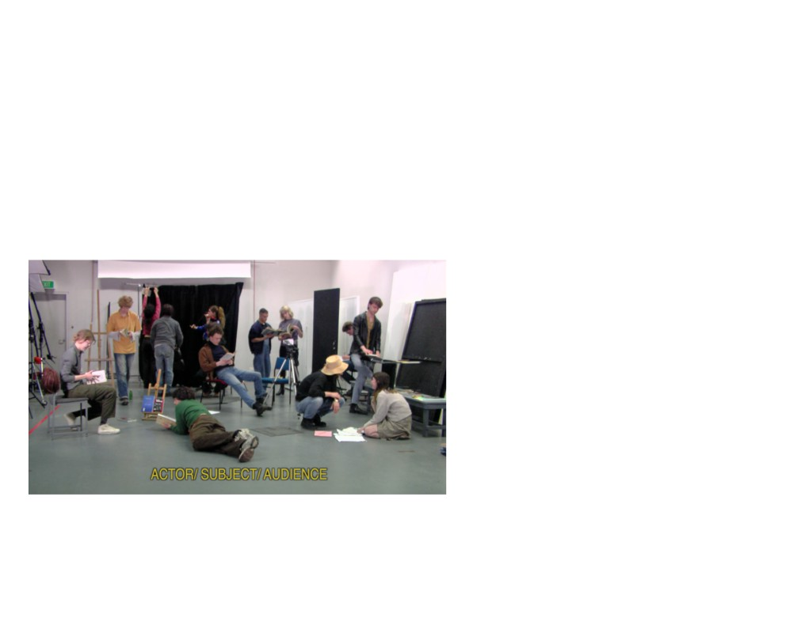
05/03/2019
STORY HOUSE SELECT · LOVE & FASCISM IN THE 21ST CENTURY: Interview on the debut film by Carmen-Sibha Keiso
it’s beautiful to me y’know like, (points to Catherine Breillat interview and quotes)’I think it’s beautiful’. It’s regurgitation.
I love how flat this is. Lets make the interview really really flat. I’m so exhausted.
LR: What’s the relationship between the voiceover and the characters in the tableaux’s?
CK: The narrator’s are like evil overseers, fabricating the characters destiny.
LR: But the characters have no names?
CK: Yeah, the characters could be anybody. But they do have names, they’re Students. But I guess they are standins for
myself. The narrators are me also. It’s just me dictating myself again. It’s so insular…
7/12
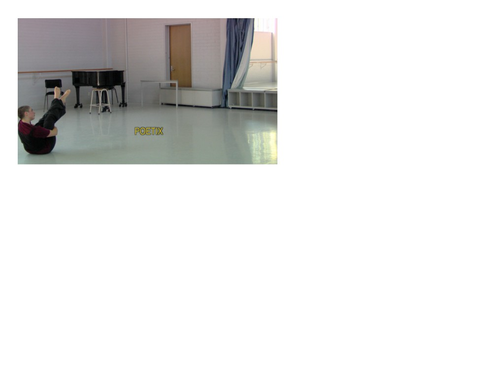
05/03/2019
STORY HOUSE SELECT · LOVE & FASCISM IN THE 21ST CENTURY: Interview on the debut film by Carmen-Sibha Keiso
LR: Isn’t that a little egotistical?
CK: Yeah of course, but aren’t all artists? Isn’t that why we make art?
Why don’t we talk about how the film makes people laugh and how I didn’t think that would happen. Is it a selfmockery?
That can be a question too. Or, a ‘selfdrag’ - have you heard of that one before?
LR: That reminds me of Womanliness as Masquerade, an essay by Joan Riviere - go on tell me Carmen, why does the
film make people laugh and why didn’t you expect it to?
CK: I think people laugh because they see themselves in my selfparody and my selfdrag. And, I didn’t expect anyone to
laugh because it was really serious to me. Because I guess I’m severely heartbroken.
(Interlude: unprintable discussion about ‘life and love’)
8/12
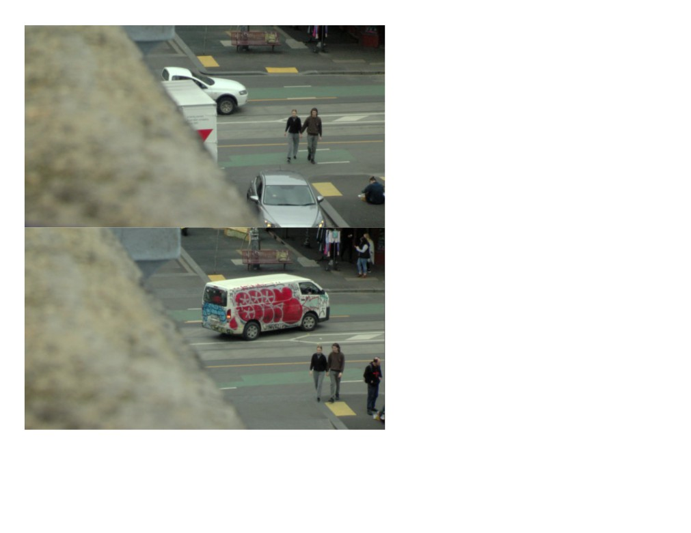
05/03/2019
STORY HOUSE SELECT · LOVE & FASCISM IN THE 21ST CENTURY: Interview on the debut film by Carmen-Sibha Keiso
LR: So what is it that people are relating to?
CK: What do you wanna call it? The liminal haze or Millennial malaise.
9/12
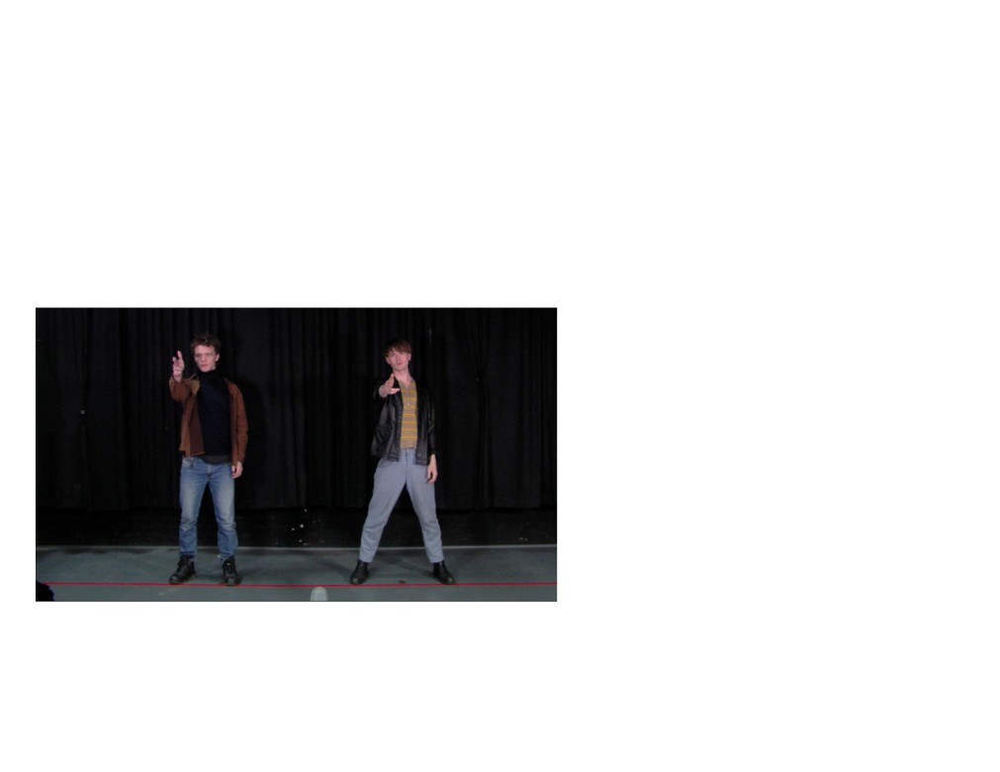
05/03/2019
STORY HOUSE SELECT · LOVE & FASCISM IN THE 21ST CENTURY: Interview on the debut film by Carmen-Sibha Keiso
LR: Go on…
CK: The contemporary condition, you know, what it means to exist in a contemporary culture. In “dragging” myself I am
“dragging” the culture I am a product of. You do the math… Like it goes beyond me.
LR: I’m imagining you literally being dragged
CK: Yeah by the hair.
But yeah, it’s like that Adorno line I really liked: ‘to reveal a discontent with the culture he owes his discontent’, you
remember that one?
10/12
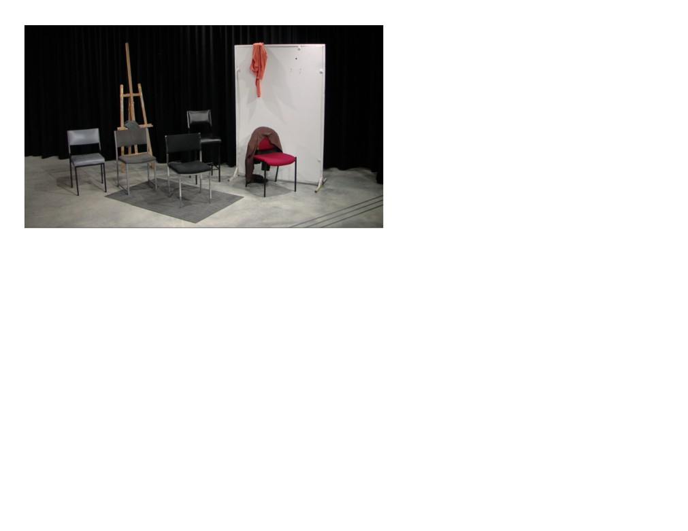
05/03/2019
STORY HOUSE SELECT · LOVE & FASCISM IN THE 21ST CENTURY: Interview on the debut film by Carmen-Sibha Keiso
LR: But then why do you think it’s a selfmockery?
CK: I think I can humiliate myself, or maybe its me trying to be humble… This is so popculture, youth culture… But the
whole thing, is just about me. I have a note in my phone that I think is kind of funny, I’m just looking for it….
LR: Do you wanna email it to me?
CK: I don’t think we need all of it. It’s so vague, I really like the last part: ‘the intimacy comes through when you realise I am
just confiding in you, a viewer, a listener. Brick Wall. And soon you’ll realise it’s not about theatre, its just about me.’
11/12
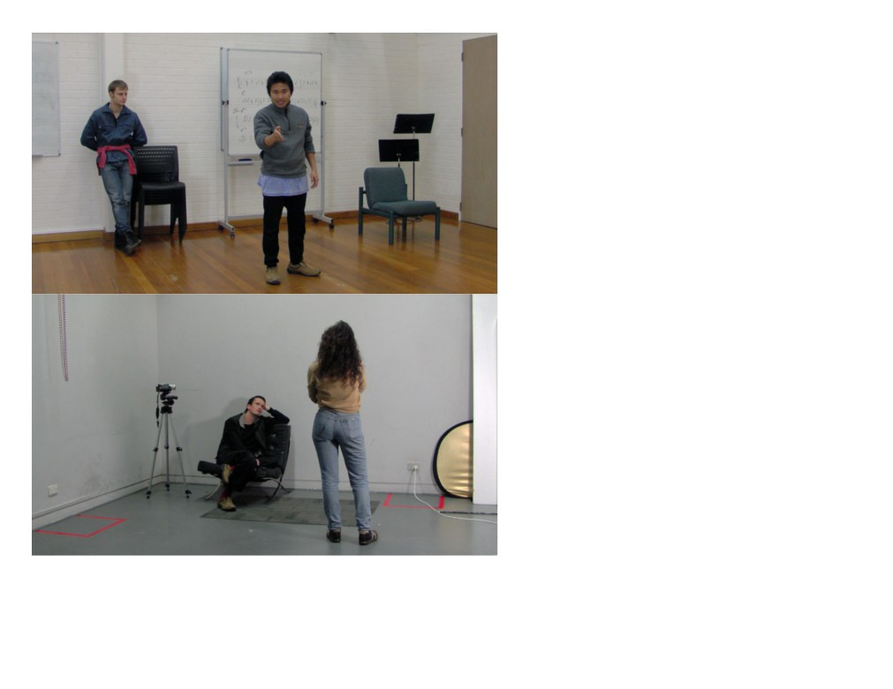
05/03/2019
STORY HOUSE SELECT · LOVE & FASCISM IN THE 21ST CENTURY: Interview on the debut film by Carmen-Sibha Keiso
View the trailer for Love & Fascism in the 21st Century. The film will premiere at Long Play on Wednesday 21st of
November at 7PM, click here for more info.
12/12